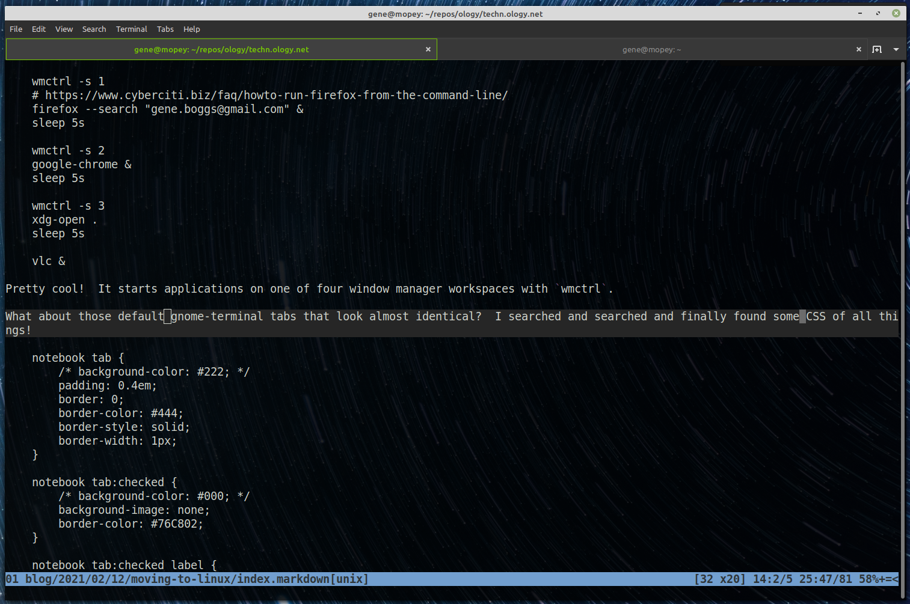

Moving to Linux
My Macbook was growing old in the tooth and the safety of my data, if it just gave up one day, was too much to stress over.
So I bought a new laptop with Mint Linux preinstalled!
As opposed to Macs where everything is setup for you by the Apple Overlords and you just have to install apps, Linux is about customization.
With that in mind, I wanted my machine to startup in a usable state - with apps ready to go. Here is a bash script that I run under the Mint Startup Applications:
#!/bin/bash
sleep 5s
wmctrl -s 0
gnome-terminal --maximize --tab-with-profile=Default --tab-with-profile=Default
sleep 5s
gpaste-client ui
sleep 5s
wmctrl -s 1
firefox &
sleep 5s
wmctrl -s 2
google-chrome &
sleep 5s
wmctrl -s 3
xdg-open .
sleep 5s
vlc &
Pretty cool! It starts applications on one of four window manager workspaces with wmctrl.
What about those default gnome-terminal tabs that look almost identical? I searched and searched and finally found some CSS of all things!
/* Place in: ~/.config/gtk-3.0/gtk.css */
notebook tab {
/* background-color: #222; */
padding: 0.4em;
border: 0;
border-color: #444;
border-style: solid;
border-width: 1px;
}
notebook tab:checked {
/* background-color: #000; */
background-image: none;
border-color: #76C802;
}
notebook tab:checked label {
color: #76C802;
font-weight: 500;
}
notebook tab button {
padding: 0;
background-color: transparent;
color: #ccc;
}
notebook tab button:hover {
border: 0;
background-image: none;
border-color: #444;
border-style: solid;
border-width: 1px;
}

There are other tweaks like reassigning the useless media keys (top row) to my media player, VLC. And then turning off the media key hijacking that Firefox and Chrome do... WHEW.
Anyway, I am a happy camper now. No need for Apple anymore (other than Logic Pro X, which I can't live without it seems).